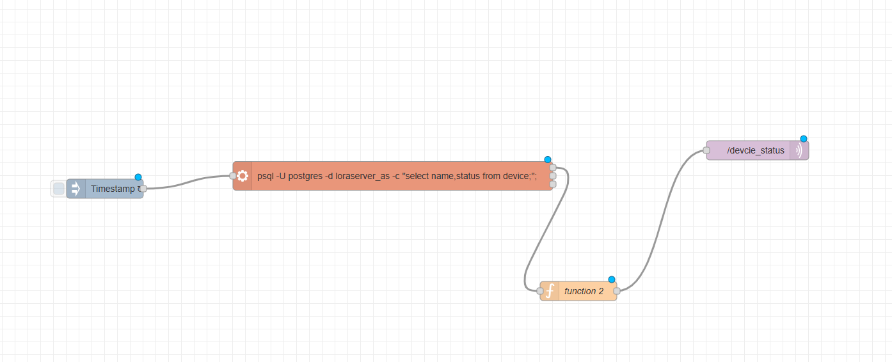
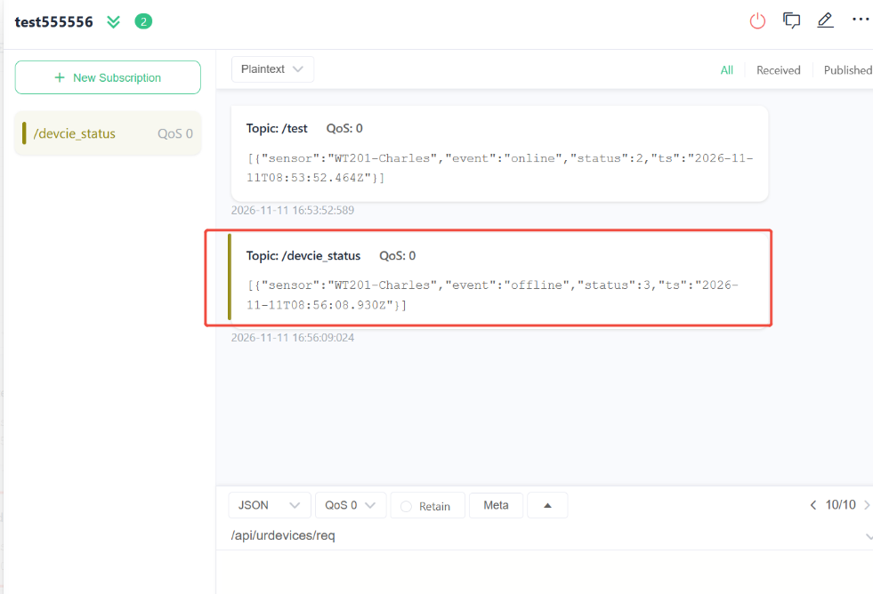

How to implement MQTT alerts for sensor disconnection using Node-RED
| Version | Update Time | Description | Author |
| 1.0 | Nov 24, 2026 | Initial version | Charles |
Description
This article will guide you on how to use the Node-RED feature of the Milesight gateway to monitor the status of sensors built into the NS. Once a sensor changes from online to offline, or from offline to online, your MQTT Broker will receive an MQTT alert message.
Requirement
Milesight Gateway: UG56/UG65/UG67
Configuration
Step 1: Launch Node-RED and Import Flow Example
Go to App > Node-RED page to enable Node-RED program and wait for a while to load the program, click Launch button to start Node-RED web GUI.

Log in the Node-RED web GUI. The account information is the same as gateway web GUI.

Click Import to import the node-red flow example by pasting the content or import the json format file.


Step 2: Node-RED Configuration
Flow structure:

You need to modify the MQTT Output node in the flow, configuring it with your MQTT Broker address and the corresponding topic — this refers to the node marked /device_status in the diagram two images above.
Content:
| [{"id":"b6310f24ba10bc17","type":"tab","label":"Flow 1","disabled":false,"info":"","env":[]},{"id":"e577acdda98416ea","type":"mqtt out","z":"b6310f24ba10bc17","name":"","topic":"/devcie_status","qos":"","retain":"","respTopic":"","contentType":"","userProps":"","correl":"","expiry":"","broker":"d01f23922e1901be","x":1340,"y":360,"wires":[]},{"id":"35fbb4fd1d34ee45","type":"inject","z":"b6310f24ba10bc17","name":"","props":[{"p":"payload"},{"p":"topic","vt":"str"}],"repeat":"60","crontab":"","once":false,"onceDelay":0.1,"topic":"","payload":"","payloadType":"date","x":320,"y":420,"wires":[["c2615db6a5ef18ae"]]},{"id":"c2615db6a5ef18ae","type":"exec","z":"b6310f24ba10bc17","command":"psql -U postgres -d loraserver_as -c /"select name,status from device;/";","addpay":"","append":"","useSpawn":"false","timer":"","winHide":false,"oldrc":false,"name":"","x":770,"y":400,"wires":[["973462f305fdace2"],[],[]]},{"id":"973462f305fdace2","type":"function","z":"b6310f24ba10bc17","name":"function 2","func":"/nlet oldStatusMap = flow.get(/"sensor_status_map/") || {};/nconst text = msg.payload;/n/n/nconst rows = text.split('//n');/nconst newMap = {};/nconst alerts = [];/n/nfor (const line of rows) {/n/n const m = line.match(/^//s*([^//|]+?)//s*//|//s*(//d+)//s*$/);/n if (!m) continue;/n const name = m[1].trim();/n const status = parseInt(m[2]);/n newMap[name] = status;/n}/n/n/nfor (const name in newMap) {/n const newSt = newMap[name];/n const oldSt = oldStatusMap[name];/n/n/n if (oldSt !== 2 && newSt === 2) {/n alerts.push({/n sensor: name,/n event: /"online/",/n status: 2,/n ts: new Date().toISOString()/n })/n }/n /n if (oldSt !== 3 && newSt === 3) {/n alerts.push({/n sensor: name,/n event: /"offline/",/n status: 3,/n ts: new Date().toISOString()/n })/n }/n}/n/n/nflow.set(/"sensor_status_map/", newMap);/n/nif (alerts.length > 0) {/n /n msg.payload = alerts;/n return msg;/n} else {/n /n return null;/n}/n","outputs":1,"noerr":0,"initialize":"","finalize":"","libs":[],"x":1060,"y":580,"wires":[["e577acdda98416ea"]]},{"id":"d01f23922e1901be","type":"mqtt-broker","name":"","broker":"192.168.45.127","port":"1883","clientid":"","autoConnect":true,"usetls":false,"protocolVersion":"4","keepalive":"60","cleansession":true,"birthTopic":"","birthQos":"0","birthPayload":"","birthMsg":{},"closeTopic":"","closeQos":"0","closePayload":"","closeMsg":{},"willTopic":"","willQos":"0","willPayload":"","willMsg":{},"userProps":"","sessionExpiry":""}] |
Step 3: Deploy and Check Result
Click Deploy to save all node-red configurations.

Once any sensor built into your NS goes offline or comes online, your MQTT Broker will receive a corresponding message, as shown in the figure below.

-------END-----